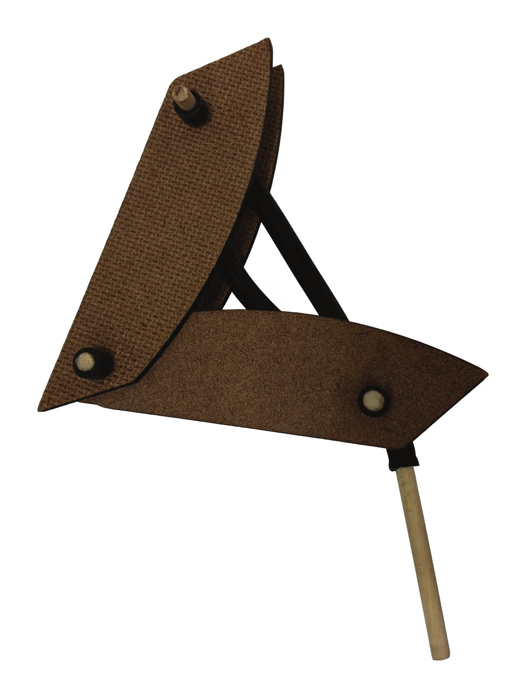
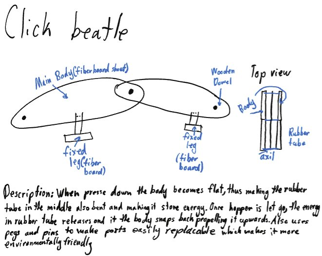
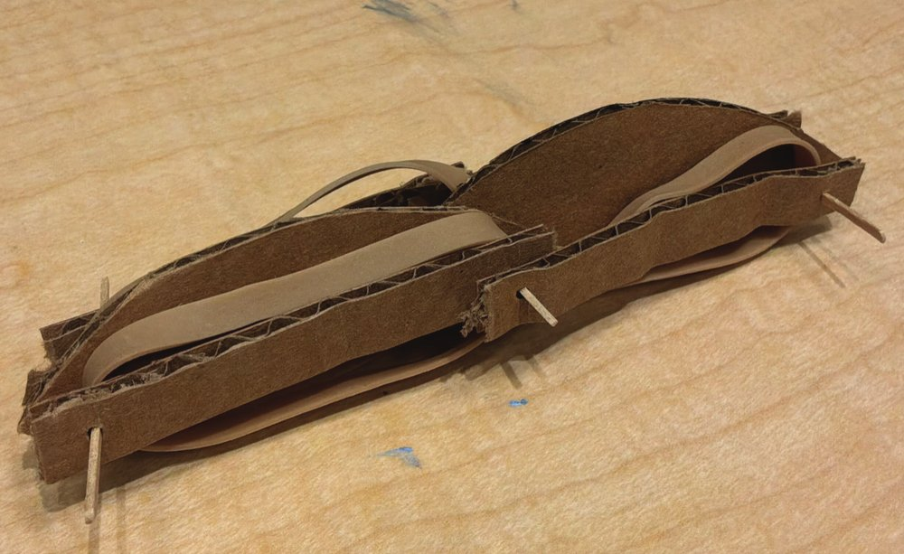
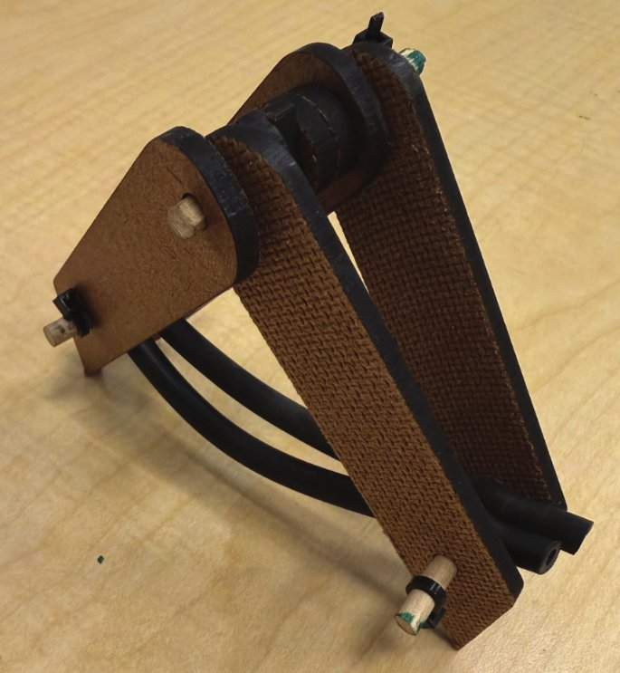

Bio-inspired design · Sept 2026–
Click Beattle
A click-beetle-inspired hopper built from replaceable modules.
Overview
Click Beattle is a hopper inspired by the click beetle, designed to jump at least one meter vertically while minimizing material waste. Click beetles jump to gain height rather than distance, and their jumping mechanism is distinctive. Replicating it was an opportunity to strengthen my engineering and biomimicry skills.

Design for sustainability
The hopper is built from independent modules (legs, body, and head) connected with pegs and pins instead of hot glue. When a part fails, only that module needs to be replaced, not the entire device. I focused on repairability because throwing away a whole product when one part fails creates a lot of avoidable waste.
Mechanism
- Energy storage: Compressing the body flattens it and bends a length of rubber tubing, which stores elastic energy.
- Trigger: A wooden dowel seated in the tubing acts as a friction-delay trigger. Once the dowel loosens enough to slip free, the stored energy is released at once.
- Body geometry: A curved body profile increases ground contact as the hopper unfolds.
Process
- Research: Observed click beetles and frog hoppers in the field and examined the biological components of their jumping mechanisms.
- Ideation: Sketched multiple hopper concepts.
- Proof of concept: Built a first sketch model from cardboard and toothpicks.
- Prototype: Modeled the design in SolidWorks, had the parts laser cut, and assembled the first prototype.
- Iteration: Compiled a change list, then revised the CAD and re-cut the parts:
- Rounded the leg bottoms to improve ground contact
- Made the spacers fully circular to add weight and eliminate repeated reorientation
- Added rubber tubing to the dowel ends to keep the legs from shifting
- Shortened the rubber bands to store more elastic energy
- Added a shortened dowel to one end of the rubber bands as the release mechanism
- Final build: Assembled the final hopper from the revised parts.


